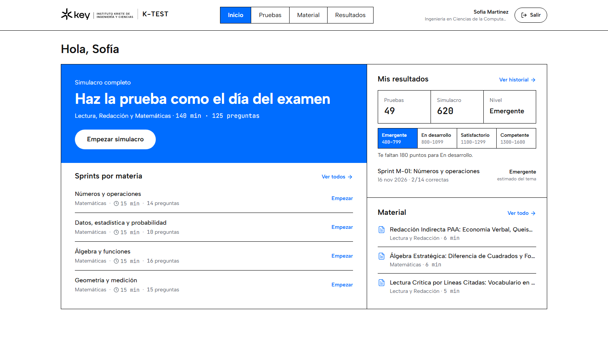
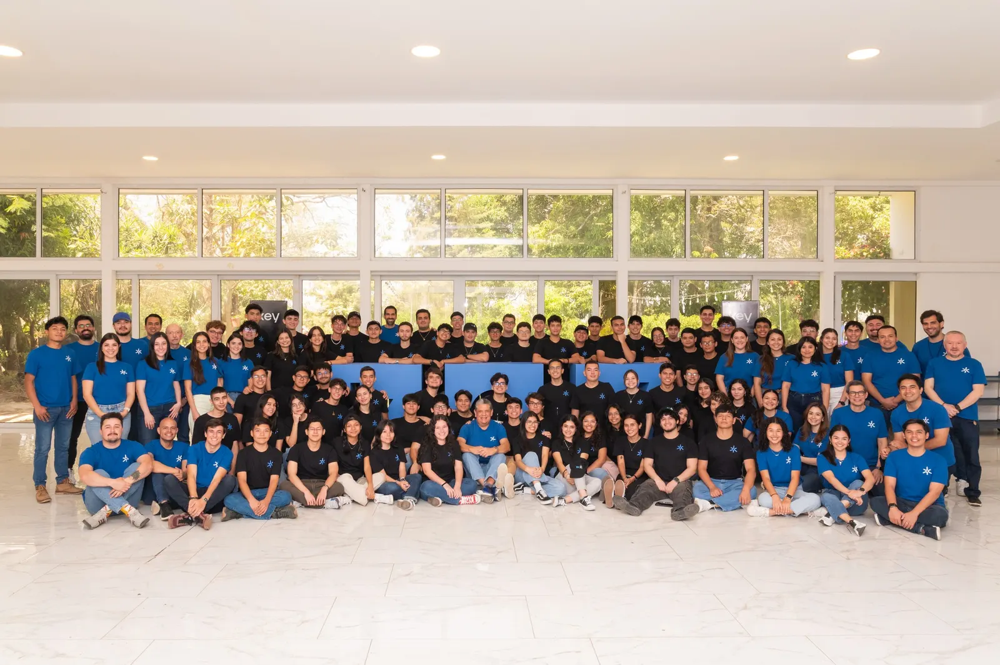
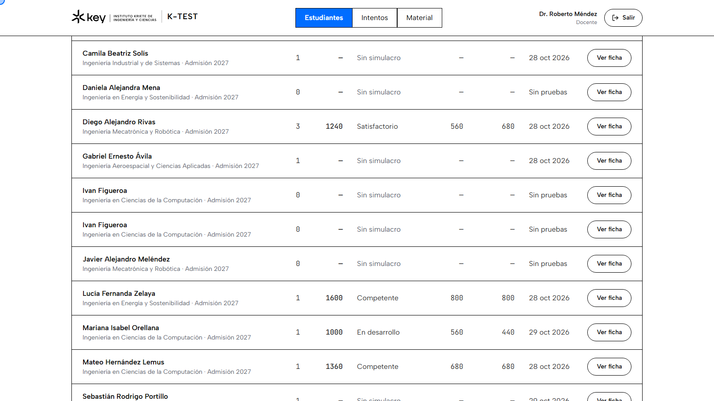
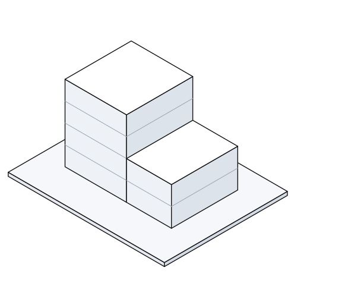
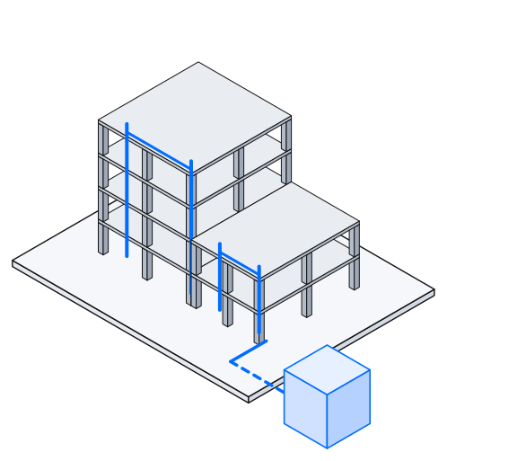
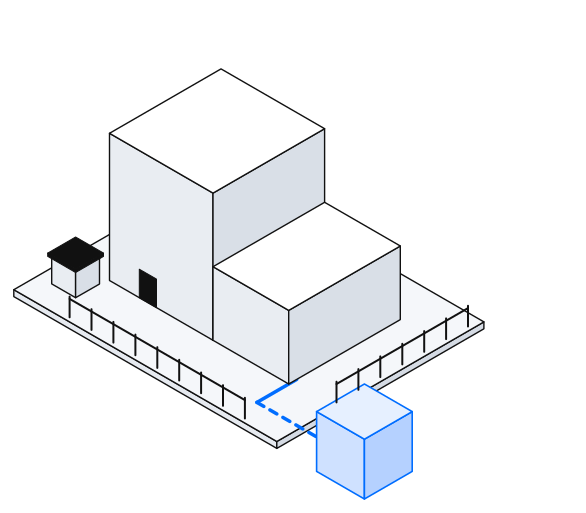

K-Test
Práctica de la PAA para los admitidos de Key, desde cualquier lugar.
Soham Villacorta e Iván Figueroa
Curso de Preparación para la PAA, noviembre de 2026

Qué es K-Test
La PAA, practicada como el día del examen, desde donde estés.
Simulacros completos
Sprints cortos por tema
Su nivel, de Emergente a Competente
Material de estudio

Qué es K-Test
Por qué lo hacemos
Conoce la prueba
El formato y los ejercicios de Lectura, Redacción y Matemáticas.
A tu ritmo
Cuando quieras y desde donde estés.
Sin costo
Simulacros, sprints y material, sin pagar nada.

Qué es K-Test
Quiénes lo hacemos
Soham Villacorta
Experiencia y diseño de la plataforma
Iván Figueroa
Datos y servidor de la plataforma
Desde abril damos juntos el Curso de Preparación para la PAA. Así trabajamos hoy:
Metodología enfocada en el examen
Cada jornada practica el formato, los tiempos y las estrategias de la PAA.
Técnicas para manejar la ansiedad
Para llegar con calma al día de la prueba.
El curso en números
Asistencia desde abril
184
jóvenes vinieron al curso al menos un sábado
El curso en números
Temporada alta: mayo a julio
409 asistencias desde abril; 237 en mayo, junio y julio (58 %).
32
93
78
66
50
25
38
27
Abr
May
Jun
Jul
Ago
Sep
Oct
Nov
El curso en números · asistencias por mes
Más de un tercio vino un solo sábado
38%
69 de los 184 jóvenes
1 sábado
69
2
41
3
42
4 o más
32
El curso en números · sábados asistidos por joven, desde abril
Impacto desde agosto
Cumplió expectativas
+0.75
3.87 → 4.62
Motivación
+0.60
3.83 → 4.43
Me preparó para la PAA
+0.48
4.04 → 4.52
Retroalimentación
+0.44
4.13 → 4.57
Por mejorar
Manejo de la ansiedad
3.57
Capaz de aplicarlo
3.95
Claridad para resolver
4.83 → 4.29
El curso en números · encuesta de cada jornada, agosto contra noviembre, escala de 1 a 5
Lo que más piden
41
veces piden «más ejercicios» en sus comentarios
El curso en números · comentarios de agosto a noviembre
Lo que el sábado no alcanza
Hoy
Con K-Test
Viven lejos del campus
Practican desde su casa
No pueden venir los 4 sábados
Siguen practicando entre sábados
Llegan a la PAA sin conocer la prueba
Hacen el simulacro con preguntas reales
El hueco que llena K-Test
Lo que ya hace el prototipo

Como el día de la prueba
Cronómetro, fórmulas, marcar y descartar opciones.
Su nivel, no un porcentaje
Y cuántos puntos le faltan para el siguiente.

Vista del docente
El avance de cada admitido, en un lugar.
257 → 142
clics para el simulacro completo, tras pruebas de usuario
El prototipo
De maqueta a edificio

Hoy
Maqueta
Ya tiene
Simulacro, sprints, niveles y vista del docente. Se ve y se usa.
Le falta
Que funcione fuera de una sola computadora.



Lo que falta para lanzar · 1 de 5
De maqueta a edificio
Momento 2
Estructura
Hoy
Corre en una computadora.
Falta
Servidor en la nube y una arquitectura para todos los admitidos.
Lo que falta para lanzar · 2 de 5
De maqueta a edificio
Momento 3
Instalaciones
Hoy
Base de datos de prueba.
Falta
Base de datos consistente, conectada al sistema de admisiones.
Lo que falta para lanzar · 3 de 5
De maqueta a edificio
Momento 4
Seguridad y recepción
Hoy
Inicio con Microsoft, en pruebas.
Falta
Cuenta única de Key, permisos por rol, datos de menores protegidos y respaldos.
Lo que falta para lanzar · 4 de 5
De maqueta a edificio
Momento 5
Acabados
Falta
Identidad Key completa, material de estudio, más simulacros y sprints.
Antes de abrir: el permiso de habitabilidad
Prueba piloto, aviso de privacidad y revisión de seguridad.
Lo que falta para lanzar · 5 de 5
Lo que pedimos
Aprobar el proyecto
Para pasar de la maqueta al edificio y abrir K-Test a todos los admitidos de Key.
Lo que pedimos
Para los que imaginan, y hacen.
Gracias
K-Test · Soham Villacorta e Iván Figueroa